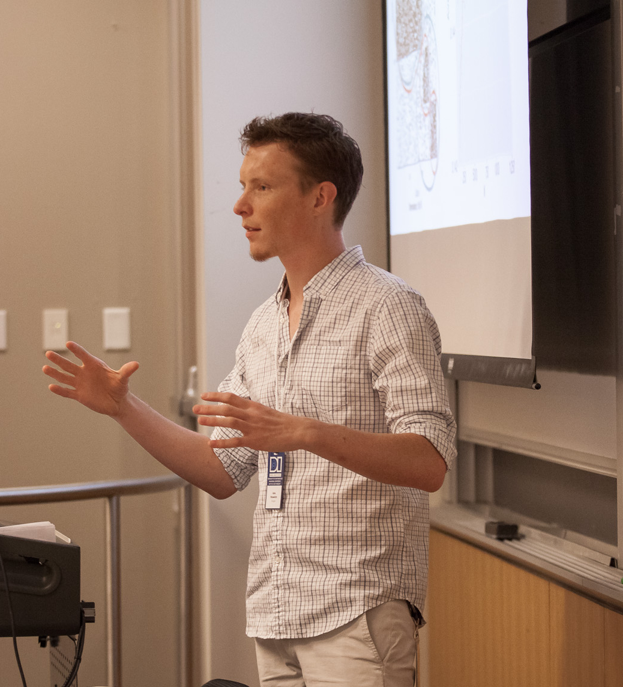

I’m a Data Scientist at Google. In 2017 I received my Ph.D. in Statistics from the Department of Statistics and Operations Research (STOR) at UNC Chapel Hill. My research interests include machine learning methods for networks, and computational genomics. My thesis advisers were Andrew B. Nobel and Shankar Bhamidi. Throughout my degree I was an active member of a working group in the GTEX Project, and part of the Probability Group at UNC.
Publications
- Aguet, Francois; …; Palowitch, John; Wright, Fred A.; GTEx Consortium; Lappalainen, Tulli; Ardlie, Kristin G.; Dermitzakis, Emmanouil T.; Brown, Christopher D.; Montgomery, Stephen D. “Local genetic effects of gene expression across 44 human tissues.” bioarXiv [to appear in Nature Genomics]
- Palowitch, John; Zhou, Yihui; Shabalin, Andrey; Zhou, Yihui; Nobel, Andrew B.; Wright, Fred A. “Estimation of Interpretable eQTL Effect Sizes Using a Log of Linear Model.” arXiv [to appear in Biometrics]
- Palowitch, John; Bhamidi, Shankar; Nobel, Andrew B. “Significance-based community detection in weighted networks.” arXiv [to appear in Journal of Machine Learning Research]
- Wilson, James D.; Palowitch, John, Bhamidi, Shankar; Nobel, Andrew B. “Significance Based Extraction in Multilayer Networks with Heterogeneous Community Structure.” arXiv [to appear in Journal of Machine Learning Research]
Recent Conference Presentations
- Data Institute SF Annual Conference, October 16-17 2017
- SIAM NS17, July 13-14 2017
- Conference on Statistical Learning and Data Science, June 6-8 2017
- Joint Statistical Meetings, July 30-August 4 2017
Awards
- Winner of 2017 Duke Datathon (sponsored by Citadel, Citadel Securities, and Correlation One)
- SSPA/Monsanto Student Grant, 2015